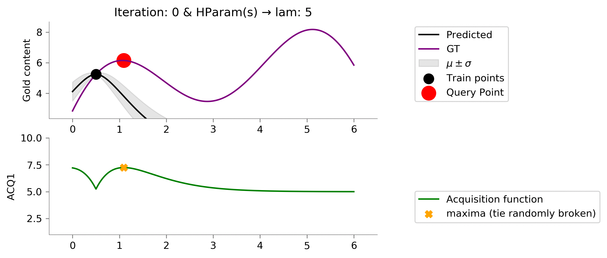
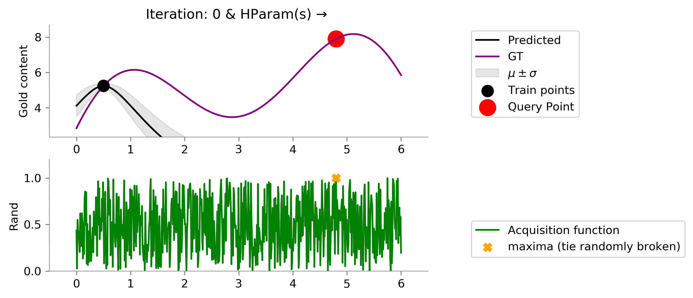
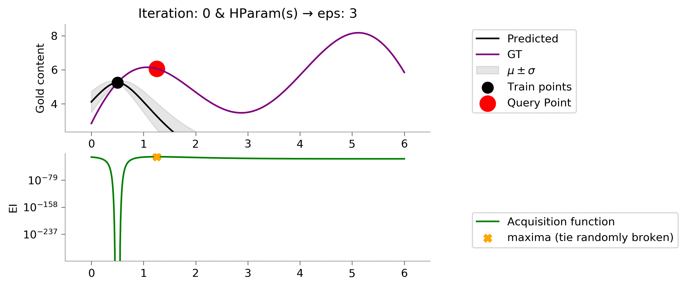
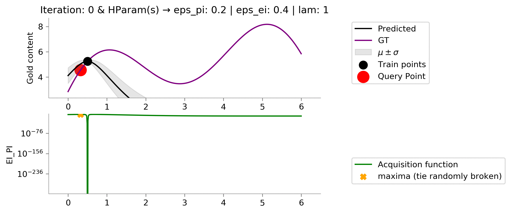

Active Learning and Multi-Arm Bandits ¶
In this post, we are going to focus on two tasks, active learning - where we query the user/oracle to label samples; and the multi-arm bandit - where we again query the user/Oracle which returns us a scalar reward. We will be trying to pose the problems first and then talk about some of the ways to solve these problems.
The primary motivation behind active learning is the expensive cost of labeling in machine learning tasks.
Mining Gold! ¶
Let us explain the two problems using the gold mining application. We will, for now, look at only one-dimensional locations, i.e., we are talking gold distribution only about a line. The issue we have is that at the start of the activity, we have no idea about the amount of gold at different locations. The only way we can get the information about the amount of gold is by drilling at a location. This drilling is costly and involves expensive sensors to be used. We, therefore, want to minimize the number of drillings that we require.
We below show two of the common objectives for the gold mining problem.
-
Problem 1: Best Estimate of Gold Distribution In this problem, we are supposed to estimate the amount of gold on the one-dimensional line. But we can not drill at every location. We should drill at those locations that provide us the "maximum" information about the distribution of the gold.
-
Problem 2: Location of Maximum Gold In this problem, we are supposed to find the location in the one-dimensional space where the gold quantity is the maximum. This problem focuses on finding the location with the most gold content.
-
Here are representative animations showing the process of drilling at new locations and to reduce the uncertainty and get the best predictions showcasing the Active Learning problem.
-
And drilling at locations to get the location of the maximum gold reserve, showcasing the Multi Armed Bandit problem
We will build the solution to both of these problems from the ground up.
Some imports ¶
import os
import warnings
import itertools
import numpy as np
import pandas as pd
import matplotlib.pyplot as plt
from sklearn.gaussian_process.kernels import Matern
from sklearn.gaussian_process import GaussianProcessRegressor
from scipy.special import ndtr
from scipy.stats import norm
warnings.filterwarnings('ignore')
%matplotlib inline
Prettyfing Matplotlib plots ¶
SPINE_COLOR = 'gray'
def format_axes(ax):
for spine in ['top', 'right']:
ax.spines[spine].set_visible(False)
for spine in ['left', 'bottom']:
ax.spines[spine].set_color(SPINE_COLOR)
ax.spines[spine].set_linewidth(0.5)
ax.xaxis.set_ticks_position('bottom')
ax.yaxis.set_ticks_position('left')
for axis in [ax.xaxis, ax.yaxis]:
axis.set_tick_params(direction='out', color=SPINE_COLOR)
return ax
Active Learning ¶
Problem 1 is very similar to problems we like to solve using active learning. Active learning is used to predict distribution by reducing uncertainty. One of the ways we can reduce the uncertainty is by choosing the point at which we have the maximum variance (we are most uncertain).
Gaussian Processes ¶
In our previous post, here ; we had introduced the Gaussian Process. As you can remember, we use Gaussian Processes to get a prediction as well as the attached uncertainty (variance) with that prediction. This will turn out to be useful for us, as we wanted to drill where we were most uncertain. By using Gaussian processes, we take some very naive assumption that the gold distribution of nearby points in similar (smoothness).
Creating ground truth data ¶
def f(x):
"""The function to predict."""
return 2*((x-3)*np.sin((x-3))) + 2 + 0.5*x
Let us now try to see how our groundtruth data looks like.
x = np.atleast_2d(np.linspace(0, 6, 600)).T
plt.plot(x, f(x), color='purple', label='GT')
plt.xlabel("X")
plt.ylabel("Gold content")
plt.title("Ground Truth for Gold Content")
format_axes(plt.gca())
plt.savefig('MAB_gifs/GT.svg', bbox_inches="tight")
Prior Model ¶
Our prior model doesn't know much and assumes a smooth relationship between points via an Matern kernel. The Grey line in the graph below denotes the knowledge we have about the gold content without drilling even at a single location.
kernel = Matern(length_scale=1.0)
# kernel = None
gp = GaussianProcessRegressor(kernel=kernel)
y_pred, sigma = gp.predict(x, return_std=True)
plt.plot(x, y_pred, 'k', label='Predicted', lw=1.5)
plt.plot(x, f(x), 'purple', label='GT', lw=1.5)
plt.xlabel("X")
plt.ylabel("Gold content")
plt.fill_between(x.flatten(), y_pred+sigma, y_pred-sigma, color='gray', alpha=0.2)
plt.legend()
format_axes(plt.gca())
plt.savefig('MAB_gifs/prior.svg', bbox_inches="tight")
Also, take notice that the confidence (uncertainty) about the gold content is also the same for every location.
Adding Training Data ¶
Let us now add a point to the train set or in other words, drill one of the locations and see the gold content (
y
). We can see how our confidence and our estimates change after we get this first information by fitting the model to the new data. I am going to add
(x = 0.5, y = f(0.5))
into the train set now.
train_X = np.atleast_2d([0.5]).T
train_y = f(train_X).ravel()
gp.fit(train_X, train_y)
y_pred, sigma = gp.predict(x, return_std=True)
plt.plot(x, y_pred, 'k', label='Predicted')
plt.plot(x, f(x), 'purple', label='GT')
plt.xlabel("X")
plt.ylabel("Gold content")
plt.fill_between(x.flatten(), y_pred+sigma, y_pred-sigma, color='gray', alpha=0.2, label=r'$\mu \pm \sigma$')
plt.scatter(train_X, train_y, color='red', s=300, zorder=10, label='Last Added Point')
plt.legend(bbox_to_anchor=(1.04,1), loc="upper left")
format_axes(plt.gca())
plt.savefig('MAB_gifs/posterior.svg', bbox_inches="tight")
Nice! We see now that the posterior has changed and we are very certain about the gold content in the vicinity of
x = 0.5
, but, very uncertain far away from it. Also, we can see that the mean of the point closer to
x = 0.5
is closer to the value that we got from drilling and seeing the gold content. So, we now come to the key idea.
Active Learning Procedure ¶
- Choose the point of having the highest uncertainty
- Add the point to train set
- Train on the new train set
- Go to 1 till convergence or budget elapsed
# Stopping criteria is 10 iterations
for i in range(10):
# Fit on current train set
gp.fit(train_X, train_y.flatten())
# predict on current pool set
y_pred, sigma = gp.predict(x, return_std=True)
plt.plot(x, y_pred, 'k', label='Predicted')
plt.plot(x, f(x), 'purple', label='GT')
plt.xlabel("X")
plt.ylabel("Gold content")
plt.fill_between(x.flatten(), y_pred+sigma, y_pred-sigma, color='gray', alpha=0.2, label=r'$\mu \pm \sigma$')
plt.scatter(train_X[:-1], train_y[:-1], color='black', s=300, zorder=10, label='Train points')
plt.scatter(train_X[-1], train_y[-1], color='red', s=300, zorder=10, label='Query Point')
plt.legend(bbox_to_anchor=(1.04,1), loc="upper left")
plt.title(f"Iteration: {i}")
format_axes(plt.gca())
plt.ylim((1, 9))
plt.xlim((-1, 7))
dirName = 'active-gp-img'
os.makedirs(dirName, exist_ok=True)
plt.savefig(f"{dirName}/{i}.png", bbox_inches="tight", dpi=300)
plt.close()
# Choose the next point with highest sigma
next_ix = np.argmax(sigma)
next_x = x[next_ix]
# Add new point with highest uncertainty to the pool set
train_X = np.vstack([train_X, [x[next_ix]]])
train_y = f(train_X)
Let us now automate this process and see how our posterior changes at every iteration where we add a sensor. For each of our iteration below, the prior was the Gaussian Process learned on the points already in the training set. We have recreated the 1st animation at the top of the post!
!convert -delay 40 -loop 0 active-gp-img/*.png MAB_gifs/active-gp.gif
There you go we have recreated one of the plots from the starting of the blog! One point to notice is that this idea of choosing the most uncertain location leads to querying of the points that are the farthest (visible when we choose the 2nd location to drill). This might not be so good as we are kind of wasting our drillings because they are at the boundary of the 1-dimensional plot.
Multi-Armed Bandit ¶
Problem 2 requires us to find the location where the gold content is maximum. Even though the problem setting may be similar, the objective is quite different than problem 1. In other words, we just want the location where we can drill to get the most gold.
Older problem - Earlier in the active learning problem, our motivation for drilling at locations was to predict the distribution of the gold content over all the locations in the one-dimensional line. We, therefore, had chosen the next location to drill where we had maximum uncertainty about our estimate.
In this problem, we are instead interested to know the location at which we find the maximum gold. For getting the location of maximum gold content, we might want to drill at the location where predicted mean is the highest (exploit). But unfortunately our mean is not always accurate, so we need to correct our mean (reduce variance / explore) too. Multi-Arm Bandit looks at both exploitation and exploration, whereas in the case of Active Learning Problem, we only cared about exploration.
Acquisition Functions ¶
Now, to take into account the combination of exploration and exploitation, we try to use a function which combines the two sides. These utility functions that take into account both exploration and exploitation in multi-arm bandit problem are called acquisition functions.
class ACQ:
def acq_fn(self, *args, **kwargs):
raise NotImplemented
def __str__(self):
return self.__class__.__name__
def __call__(self, *args, **kwargs):
return self.acq_fn(*args, **kwargs)
class ACQ1(ACQ):
def acq_fn(self, gp_reg, x, lam = 0.4, **kwrags):
"""
gp_reg: sklearn.GPRegresssor
lam: float, where the objective is: \mu(x) + \lambda \sigma(x)
"""
y_pred, sigma = gp_reg.predict(x, return_std=True)
return y_pred + lam*sigma
acq_obj = ACQ1()
train_X = np.atleast_2d([0.5]).T
train_y = f(train_X).ravel()
gp.fit(train_X, train_y)
y_pred, sigma = gp.predict(x, return_std=True)
plt.plot(x, y_pred, 'k', label='Predicted')
plt.plot(x, f(x), 'purple', label='GT')
plt.xlabel("X")
plt.ylabel("Gold content")
plt.fill_between(x.flatten(), y_pred+sigma, y_pred-sigma, color='gray', alpha=0.2, label=r'$\mu \pm \sigma$')
plt.scatter(train_X, train_y, color='red', s=200, zorder=10, label='Train points')
plt.plot(x, acq_obj(gp, x, 5), label='Acquisition function', color='green')
format_axes(plt.gca())
plt.legend(bbox_to_anchor=(1.04,1), loc="upper left")
plt.savefig(f"MAB_gifs/acq_fn.svg", bbox_inches="tight")
Here, we can see that mean near the location of the just added point (red point) is high. But as we go far from the red point, we see that our uncertainty increases to a maximum. As we discussed in multi-arm bandit problem, we like to have some combination of exploration and exploitation. The most basic way to do so is by linearly combining the two values.
ACQ1 ¶
This combined value that takes into account exploration and exploitation is referred to as the acquisition value, returned by acquisition function. We see at around the location
x = 1.4
we get the maximum value for the acquisition (green curve). Thus we next select this location to drill.
The intuition of using the acquisition function
mean + lam * uncertainty
is that we are interested in finding the global mean, so taking into account the estimated mean would be a good idea. Additionally, we would like to explore too (using
lam
); else we might be stuck in a local minimum if don't explore too much (see below).
We define a big plotting function below for saving us the trouble down the road.
def rargmax(b):
"""Randomly tie breaking argmax"""
return np.random.choice(np.flatnonzero(b == b.max()))
def plot_acquisition(
train_X, train_y,
acq_class, acq_params={},
ylim0=None, xlim0=None,
ylim1=None, xlim1=None,
y1scale='linear', it = 10,
seed = 2
):
"""acq_params would contain the parameters for our acq_fn"""
np.random.seed(seed)
# for storing the max till it iters
max_till_now = []
# Stopping criteria is 10 iterations
for i in range(it):
fig, ax = plt.subplots(nrows=2, sharex=True)
ax[1].set_yscale(y1scale)
# limits
ax[0].set_ylim(ylim0) if ylim0 is not None else ax[0].set_ylim(min(f(x)-.5), max(f(x))+.5)
ax[0].set_xlim(xlim0) if xlim0 is not None else ax[0].set_xlim(min(x)-.5, max(x)+.5)
ax[1].set_ylim(ylim1) if ylim1 is not None else None
ax[1].set_xlim(xlim1) if xlim1 is not None else ax[1].set_xlim(min(x)-.5, max(x)+.5)
# fitting
gp.fit(train_X, train_y.flatten())
# plot Acquisition
acq_obj = acq_class()
acquisition = acq_obj(gp, x, t=i+1, **acq_params, mu=max(train_y))
ax[1].plot(x, acquisition, label='Acquisition function', color='green')
# predict on current pool set
y_pred, sigma = gp.predict(x, return_std=True)
ax[0].plot(x, y_pred, 'k', label='Predicted')
ax[0].plot(x, f(x), 'purple', label='GT')
ax[0].set_xlabel("X")
ax[0].set_ylabel("Gold content")
ax[0].fill_between(x.flatten(), y_pred+sigma,
y_pred-sigma, color='gray',
alpha=0.2, label=r'$\mu \pm \sigma$')
ax[0].scatter(train_X, train_y, color='black', s=100,
zorder=10, label='Train points')
ax[0].legend(bbox_to_anchor=(1.04,1), loc="upper left")
ax[1].set_ylabel(str(acq_obj))
hyperparams = ' | '.join([str(k)+': '+str(v) for k, v in acq_params.items()])
ax[0].set_title(f"Iteration: {i} & HParam(s) → " + hyperparams)
# Choose the next point with highest sigma
max_mu = max(train_y)
max_till_now.append(max_mu)
next_ix = rargmax(acquisition)
next_x = x[next_ix]
# Add new point with highest uncertainty to the pool set
train_X = np.vstack([train_X, [x[next_ix]]])
train_y = f(train_X)
# Add new point with highest uncertainty to the pool set
ax[1].scatter(x[next_ix], acquisition[next_ix], marker='X',s=50,
c='orange', zorder=10, label='maxima (tie randomly broken)')
ax[0].scatter(x[next_ix], f(x[next_ix]), color='red',
s=200, zorder=-10, label='Query Point')
ax[0].legend(bbox_to_anchor=(1.1,1), loc="upper left")
ax[1].legend(bbox_to_anchor=(1.1,0.5), loc="upper left")
train_X = np.vstack([train_X, [x[next_ix]]])
train_y = f(train_X)
format_axes(ax[0])
format_axes(ax[1])
acq_params_str = '-'.join(list(map(str, acq_params.values())))
dirName = './MAB_pngs/'+str(acq_obj)+'/'+acq_params_str
os.makedirs(dirName, exist_ok=True)
plt.savefig(f"{dirName}/{i}.png", bbox_inches="tight", dpi=300)
plt.close()
return dirName, max_till_now
gifDir = 'MAB_gifs'
os.makedirs(gifDir, exist_ok=True)
train_X = np.atleast_2d([0.5]).T
train_y = f(train_X).ravel()
acq_params = {'lam': 1}
dirName, _ = plot_acquisition(
train_X, train_y,
ACQ1, acq_params,
ylim1=(1, 10)
)
# gify
!convert -delay 40 -loop 0 {dirName}/*.png {gifDir}/mab-gp-1.gif
Let us now try different hyperparameters for
ACQ1
. We can see that on increasing
lam
we "explore" more! In the below case we can easily see since we didn't give too much importance to the uncertainty (low
lam
) we got stuck in local minima.
acq_params = {'lam': 5}
dirName, _ = plot_acquisition(
train_X, train_y,
ACQ1, acq_params,
ylim1=(1, 10)
)
!convert -delay 40 -loop 0 {dirName}/*.png {gifDir}/mab-gp-5.gif
Below we can see that this choice of
lam = 5
is still a little smaller than we like (we would like to see that we get to exploit the location where the gold is the most.).

acq_params = {'lam': 10}
dirName, mtn_acq = plot_acquisition(
train_X, train_y,
ACQ1, acq_params,
ylim1=(1, 14)
)
!convert -delay 40 -loop 0 {dirName}/*.png {gifDir}/mab-gp-10.gif
Perfect! We see that setting this value of
lam = 10
resulted in finding points near the global maxima and not getting stuck in a local maximum.

Random ¶
We had used a little intelligent acquisition function earlier, let's see is out acquisition function is not that intelligent and chooses randomly.
class Rand(ACQ):
def acq_fn(
self, gp_reg, x, **kwargs):
"""
gp_reg: sklearn.GPRegresssor
"""
return np.random.uniform(size=x.shape[0])
dirName, mtn_rand = plot_acquisition(
train_X, train_y,
Rand, ylim1=(0, 1.2)
)
# gify
!convert -delay 40 -loop 0 {dirName}/*.png {gifDir}/rand.gif
We have here implemented a random method as a baseline. Notice, random method can find a location near the global maximum but is not able to exploit (try to find the global maxima that might be near this "best" location). Instead, it randomly chooses to explore (not even intelligently) here and there. Even with no intelligent, we might get good locations which might be close to the location with the most gold content.

Probability of Improvement (PI) ¶
Let us look into our next method for the MAB maximisation problem. As before, we want to balance or trade-off between exploration and exploitation. The idea behind the algorithm is fairly simple - choose the next point as the one which has the highest probability of improvement over the current max ($\mu^+$).
Let's understand this concept via two cases:
- We have two points of similar means (of function values (gold in our case)). We now want to choose one of these to obtain the labels or values. We will choose the one with higher variance. This basically says that given same exploitability, we choose the one with higher exploration value.
- We have two points having same variance. We would now choose the point with the higher mean. This basically says that given same explorability, we will choose the one with higher exploitation value.
- Let $\mu^+$ be the current highest value of the function
- Let $\epsilon$ be close to zero
- Choose $x^* = arg\,max(P(f(x)) > (\mu^+ +\epsilon))$
This can be given as: $x^* = _{arg\,max_{x}} \Phi(\frac{\mu(x) - \mu^+ - \epsilon}{\sigma(x)})$ where $\Phi(.)$ indicates the CDF.
# Code is heavily borrowed from: https://modal-python.readthedocs.io/
# en/latest/_modules/modAL/acquisition.html#max_PI
class PI(ACQ):
def acq_fn(
self, gp_reg, x, mu=5., eps=0.01, **kwargs):
"""
gp_reg: sklearn.GPRegresssor
"""
y_pred, sigma = gp_reg.predict(x, return_std=True)
cdf = ndtr((y_pred - mu - eps)/sigma)
return cdf
Intuition behind PI ¶
Below is a graph that helps to visualize how the PI values are calculated. We have calculated for 3 points
x in [0.10, 0.6, 4]
.
def gaussian(x, mu, sig):
return np.exp(-np.power(x - mu, 2.) / (2 * np.power(sig, 2.)))
def pi_cdf_plot(gp, x, train_X, train_y, x_locs, eps=0.1):
'''gp: trained gp
x: all x pos
train_X: locations sensed till now
train_y: sensed functional values
x_locs: points on x axis we would like to visualize pi values
'''
fig, ax = plt.subplots(nrows=2, sharex=True, figsize=(14,10))
plt.subplots_adjust(bottom=0.1, right=0.8, top=0.9)
# PI Plot
p = PI()
gp.fit(train_X, train_y)
mu_plus = max(train_y)
ax[0].plot(x, p(gp, x, mu=mu_plus, eps=eps))
ax[0].set_ylabel("Probability of Improvement (PI)")
ax[0].set_xlabel("X");
ax[0].set_title(f"Probability of Improvement values when eps = {eps}")
# CDF plot
# for internal calcs
colors = itertools.cycle(('g', 'r', 'c', 'm', 'y', 'k', 'w'))
y_max = max(f(x))
y_min = min(f(x))
# getting correpsonding indices
locs = []
for x_loc in x_locs:
ix = np.argmin(abs(x - x_loc))
locs.append(ix)
# plotting GT
ax[1].plot(x, f(x), color='purple', label='GT')
# plotting preds
mu, sig = gp.predict(x, return_std=True)
ax[1].plot(x, mu, color='black', label='Predictions')
ax[1].fill_between(x.flatten(), mu + sig, mu - sig, color='black', alpha=.2)
# plotting mu_plus
ax[1].plot(x, len(x)*[mu_plus], '-.b',
label=r'Max Detected $(\mu^+)$')
gran = 1000
y_linspace = np.linspace(-1, 9, gran)
# finding where y_linspace meets mu_plus
mu_plus_ix = np.argmin(abs(y_linspace - mu_plus))
for i, loc in enumerate(locs):
color = next(colors)
x_linspace = gaussian(y_linspace, mu[loc], sig[loc]) + x[loc]
ax[1].plot(x_linspace, y_linspace, '--', color=color)
ax[1].scatter(x[loc], mu[loc], color=color, label=f'{i}th Location')
mu_line = np.array([mu_plus] * (gran - mu_plus_ix))
ax[1].fill_between(x_linspace[mu_plus_ix:],
y_linspace[mu_plus_ix:],
mu_line, color=color, alpha=0.2)
ax[1].set_xlabel("X Positions")
ax[1].set_ylabel("Gold Content")
ax[1].set_title("Graph showing how PI is calculated (Shaded regions)")
ax[1].legend(loc='right')
format_axes(ax[0])
format_axes(ax[1])
plt.savefig("MAB_gifs/pi_cdf.svg", bbox_inches="tight")
pi_cdf_plot(gp, x, train_X, train_y, x_locs=[0.10, 0.6, 4], eps=0.1)

mu_plus
refers to the maximum functional value i.e.,
max(train_y)
, where
train_y
refers to the gold content at the currently drilled locations. We see that the probability of improvement values are calculated by finding the functional value of the cumulative density function at
mu_plus
. The Gaussian parameters for each point are the mean and standard deviation predicted from Gaussian Process Regressor for that point.
Hyperparameter: Eps ¶
Now we have the intuition behind how Probability of Improvement is calculated, now let's change
eps
and look at its effects.
eps = 0.01
acq_params = {
'eps': eps
}
dirName, _ = plot_acquisition(
train_X, train_y,
PI, ylim1=((-.05, 1.05)),
acq_params = acq_params
)
# gify
!convert -delay 40 -loop 0 {dirName}/*.png {gifDir}/mab-gp-pi-eps{eps}.gif
Looking at the graph above we can see that we are not effectively exploring at value
eps = 0.01
for the Probability of Improvement acquisition function. We are stuck.
eps = 0.5
acq_params = {
'eps': eps
}
dirName, mtn_pi = plot_acquisition(
train_X, train_y,
PI, ylim1=((-.05, .1)),
acq_params = acq_params,
y1scale='log'
)
# gify
!convert -delay 40 -loop 0 {dirName}/*.png {gifDir}/mab-gp-pi-eps{eps}.gif
Looking above, we see increasing the value to
eps = 0.5
enables us to explore more and get to the maximum value which we wanted in the case of Multi-arm bandit problem. One can notice that values at $x \in [3, 4.5]$ posses uncertainty (can be identified by the grey translucent area, but as we remember we are not interested in getting the best prediction of the gold distribution, we only care about the maximum value that we can achieve, which this acquisition function with given hyper-parameters is able to capture nicely!
Let's look at what happens if we increase the hyper-parameter
eps
a bit more.
eps = 3
acq_params = {
'eps': eps
}
dirName, _ = plot_acquisition(
train_X, train_y,
PI, ylim1=((-.05, 1.05)),
y1scale='log', acq_params = acq_params
)
# gify
!convert -delay 40 -loop 0 {dirName}/*.png {gifDir}/mab-gp-pi-eps{eps}.gif

We see that we made things worse! Our model now uses
eps = 3
which has effectively resulted in way too much exploratoration. This amount of exploration is not able to exploit when we land somewhere near a global maxima.
Expected Improvement (EI) ¶
Probability of improvement only looked at
how likely
is an improvement, but, shouldn't we be looking into
how much
we can improve. The next criterion called Expected Improvement (EI) looks into both :)
$$Z= \frac{\mu(x) - \mu^+ - \epsilon}{\sigma(x)}$$ where $\Phi(.)$ indicates CDF and $\phi(.)$ indicates pdf
class EI(ACQ):
def acq_fn(self, gp_reg, x, mu=5., eps=0.01, **kwargs):
"""
gp_reg: sklearn.GPRegresssor
mu: max value of y among the selected train_pts
"""
y_pred, sigma = gp_reg.predict(x, return_std=True)
z = (y_pred - mu - eps)/sigma
return (y_pred - mu - eps)*ndtr(z) + sigma*norm.pdf(z)
p = EI()
gp.fit(train_X, train_y)
mu_plus = max(train_y)
plt.plot(x, 5*p(gp, x, mu=mu_plus, eps=0))
plt.ylabel(f"{p}")
plt.xlabel("X");
eps = 0.01
acq_params = {
'eps': eps
}
dirName, _ = plot_acquisition(
train_X, train_y,
EI, ylim1=((-0.001, .05)),
acq_params=acq_params,
y1scale='log'
)
# gify!
!convert -delay 40 -loop 0 {dirName}/*.png {gifDir}/mab-gp-ei-eps{eps}.gif
Like the Probability of Improvement's acquisition function, we can moderate the amount of explorability the Expected Improvement's acquisition function by setting the
eps
hyper-parameter.
We see that having
eps = 0.01
primarily results in exploitation, and we are not able to get to the global maxima due to this myopic drilling location selection.
Let's try increasing the
eps
variable to focus a little more on exploribility.
eps = 1.5
acq_params = {
'eps': eps
}
dirName, mtn_ei = plot_acquisition(
train_X, train_y,
EI, ylim1=((-0.001, .05)),
acq_params=acq_params,
y1scale='log'
)
# gify!
!convert -delay 40 -loop 0 {dirName}/*.png {gifDir}/mab-gp-ei-eps{eps}.gif
As we expected, increasing the value to
eps = 1.5
makes the acquisition function explore more and exploit when the time comes. We see that it moves slowly once it reaches near the global maxima, trying to find the global maxima. In this case, the exploration is effectively helping us reach a higher functional value much earlier!
Let's see if increasing
eps
helps us more!
eps = 3
acq_params = {
'eps': eps
}
dirName, _ = plot_acquisition(
train_X, train_y,
EI, ylim1=((-0.001, .05)),
acq_params=acq_params,
y1scale='log'
)
# gify!
!convert -delay 40 -loop 0 {dirName}/*.png {gifDir}/mab-gp-ei-eps{eps}.gif

Is this better than before? Turns out a yes and a no. We see that here we do too much exploration given the value of
eps = 3
. Which results in early reaching something close to global maxima, but unfortunately we don't exploit to get more gains near the global maxima. We would have liked an acquisition function that tried to exploit a bit more after reaching somewhere close to the global maxima. In essence:
- reach near global maxima in a lower number of iterations
- we don't exploit once we reach near global maxima
def ei_pi_plot(
train_X, train_y, i,
ylim=None, xlim=None,
yscale='log', xscale='log',
seed = 2,
pi_params={}, ei_params={},
):
np.random.seed(seed)
fig, ax = plt.subplots()
ax.set_yscale(yscale)
ax.set_xscale(xscale)
# fitting
gp.fit(train_X, train_y.flatten())
# for plotting scatter plot
pi_obj = PI()
ei_obj = EI()
pi_acq = pi_obj(gp, x, **pi_params, mu=max(train_y))
ei_acq = ei_obj(gp, x, **ei_params, mu=max(train_y))
# predict on current pool set
y_pred, sigma = gp.predict(x, return_std=True)
ax.scatter(pi_acq, ei_acq, color='black', alpha=0.4, label='Location')
ax.set_ylabel('EI_acq value')
ax.set_xlabel('PI_acq value')
pi_hyperparams = ': HParam(s) → '+' | '.join([str(k)+': '+str(v) for k, v in pi_params.items()])
ei_hyperparams = ': HParam(s) → '+' | '.join([str(k)+': '+str(v) for k, v in ei_params.items()])
# limits
ax.set_ylim(ylim) if ylim is not None else None # ax.set_ylim(min(ei_acq), max(ei_acq)
ax.set_xlim(xlim) if xlim is not None else None # ax.set_xlim(min(pi_acq), max(pi_acq))
strr = str(pi_obj) + pi_hyperparams + '\n' + str(ei_obj) + ei_hyperparams
ax.set_title(strr)
ax.legend(bbox_to_anchor=(1.1,1), loc="upper left")
format_axes(ax)
pii = list(map(str, pi_params.values()))
eii = list(map(str, ei_params.values()))
params_str = '-'.join(pii + eii)
dirName = './MAB_gifs/Ei_Pi_graph/'
os.makedirs(dirName, exist_ok=True)
plt.savefig(f"{dirName}/{i}.svg", bbox_inches="tight")
plt.close()
return (dirName)
pi_eps = [0.01]#, 0.001, 0.01, 0.1, 1]
ei_eps = [0.01]#, 0.001, 0.01, 0.1, 1]
for i, (pi_ep, ei_ep) in enumerate(zip(pi_eps, ei_eps)):
pi_params = {'eps': pi_ep}
ei_params = {'eps': ei_ep}
dirName = ei_pi_plot(
train_X, train_y, i,
pi_params = pi_params,
ei_params = ei_params,
yscale='linear', xscale='linear',
ylim=(0, 0.05), xlim=(0, .5),
)
# gify!
# !convert -delay 50 -loop 0 {dirName}/*.png {gifDir}/ei_pi_graph.gif
We have seen two closely related methods, The
Probability of Improvement
and the
Expected Improvement
. We can think of these two to be related to the ideas that we commonly are familiar with
risk
and
gain
respectively.
It seems natural to see how these metrics change for each of the points. We have plotted the values for both policies' acquisition function's values below, for each of the possible locations. The graph shows the relation followed between EI and PI for when we have a single training point
(0.5 f(0.5))
.
If we look closely, we can see if we have an equal estimated improvement as in the case with the points with
EI(x) = 0.4
it would be more beneficial to differentiate between these points which have a better value for Probability of Improvement. In other words, when
gain
s are the same, we should prioritize to choose the option with lesser
risk
. And similarly, when the
risk
s are similar, we would likely want to go with points with greater
gain
s.
Gaussian Process Upper Confidence Bound (GP_UCB) ¶
GP_UCB is another formulation for acquisition function where we also have theoretical bounds on the number of iterations taken to reach near global maximum.
Gaussian Process Upper Confidence Bound (GP_UCB) ¶
class GP_UCB(ACQ):
def acq_fn(self, gp_reg, x, t, mu=5.,
v = 1., delta=1., **kwargs):
"""
gp_reg: sklearn.GPRegresssor
t: Iteration number (1, ..)
"""
d = x.shape[1]
y_pred, sigma = gp_reg.predict(x, return_std=True)
# print (y_pred, sigma)
# print ('blah', np.log( (t**(d/2. + 2))*(np.pi**2)/(3. * delta) ))
# print ('v3', v* (2* np.log( (t**(d/2. + 2))*(np.pi**2)/(3. * delta) )))
k = np.sqrt( v* (2* np.log( (t**(d/2. + 2))*(np.pi**2)/(3. * delta) )))
# print ('k', k)
return y_pred + k*sigma
acq_params = {
'v': 1,
'delta': 1
}
dirName, _ = plot_acquisition(
train_X, train_y,
GP_UCB, ylim1=((0, 10)),
acq_params=acq_params,
)
# gify!
!convert -delay 40 -loop 0 {dirName}/*.png {gifDir}/mab-gp-gp_ucb1-1.gif
We seem to be exploiting too much , let's increase the exploratory hyperparameters!
acq_params = {
'v': 3,
'delta': 1
}
dirName, mtn_gp_ucb = plot_acquisition(
train_X, train_y,
GP_UCB, ylim1=((0, 10)),
acq_params=acq_params,
)
# gify!
!convert -delay 40 -loop 0 {dirName}/*.png {gifDir}/mab-gp-gp_ucb3-1.gif
Using this set of hyper-parameters, we are able to get near global maxima and further "exploit" to find the global maximum. This was a result of increasing the value of
v
to
3
; this shows that
v
gives weightage to exploration.
acq_params = {
'v': 1,
'delta': 3
}
dirName, _ = plot_acquisition(
train_X, train_y,
GP_UCB, ylim1=((0, 10)),
acq_params=acq_params,
)
# gify!
!convert -delay 40 -loop 0 {dirName}/*.png {gifDir}/mab-gp-gp_ucb1-3.gif
Setting the values of the hyperparameters to
v = 1
and
delta = 3
results a greater exploitation.
Probability of Improvement + $\lambda \ \times$ Expected Improvement (EI_PI) ¶
Below we have tried to combine PI and EI using a linear combination as a combination of various acquisition function also results in an acquisition function. We can, therefore, combine any of the acquisition function and form a new one.
class EI_PI(ACQ):
def acq_fn(self, gp_reg, x, mu=5., eps_pi=0.01, eps_ei=0.01, lam=.3, **kwargs):
"""
gp_reg: sklearn.GPRegresssor
"""
y_pred, sigma = gp_reg.predict(x, return_std=True)
# ei
z = (y_pred - mu - eps_ei)/sigma
ei_acq = (y_pred - mu - eps_ei)*ndtr(z) + sigma*norm.pdf(z)
# pi
pi_acq = ndtr((y_pred - mu - eps_pi)/sigma)
return pi_acq + lam * ei_acq
acq_params = {
'eps_pi': .2,
'eps_ei': .4,
'lam': 1,
}
dirName, mtn_ei_pi = plot_acquisition(
train_X, train_y,
EI_PI, ylim1=((0, 10)),
acq_params=acq_params,
y1scale='log',
)
# gify!
!convert -delay 40 -loop 0 {dirName}/*.png {gifDir}/mab-gp-ei_pi.gif

Comparison between all the methods ¶
Below we have a graph showing a comparison between the methods discussed above. We have chosen the hyper-parameters that gave us the best performance during our basic hyper-parameter search.
We see the
Random
method is able to find the maximum much before any of the other methods, this can be seen when we are faced with smaller spaces to find the global maximum. If we have more dimensions to
x
, searching in this space would not be so easy using random, due to what we call the curse of dimensionality.
mtns = [mtn_acq, mtn_rand, mtn_pi, mtn_ei, mtn_ei_pi, mtn_gp_ucb]
names = ['ACQ', 'Rand', 'PI', 'EI', 'EI_PI', 'GP_UCB']
markers = ['o-', 'v--', '^-', '<:', '>-.', '8:']
xx = range(len(mtns[0]))
plt.figure(figsize=(10, 6))
for n, m, mm in zip(names, mtns, markers):
plt.plot(xx, m, mm, label=n, alpha=0.7)
plt.legend()
plt.xlabel('# of sensors placed')
plt.ylabel('Max gold sensed')
plt.title('Comparison between methods')
format_axes(plt.gca())
plt.savefig("MAB_gifs/", bbox_inches="tight")
plt.show()

Observation ¶
We see that the plots above show the maximum gold content detected for the case of multi-arm bandit problem vs. the number of holes drilled. Looking at the graph above we can see that for our problem Probability of Improvement performed the best among all the variants of Acquisition functions.
Conclusions ¶
We see that for the case of multi-arm bandit we have a bit different problem as compared to the active learning problem and therefore we have the different objective functions that we try to maximize for the query points.
Caution ¶
We need to take care while using Bayesian Optimization
- Scale of the features
- Kernel selection for Guassian Process
Aknowledgments ¶
-
Nando de Freitas
-
Thomas Huijskens PyData Talk - Bayesian optimisation with scikit-learn https://www.youtube.com/watch?v=jtRPxRnOXnk
Hyperparameter Search ¶
For now we have been looking at single dimensional function, i.e. $f: \mathbb{R} \texttt{ -> } \mathbb{R}$ data where we needed to find the value of $\boldsymbol{x}$ where we reached global maximum. Let's move on and try to tackle real-valued functions of $n$ real variables functions, i.e. $f: \mathbb{R}^n \texttt{ -> } \mathbb{R}$. We will soon see that our methods that we saw earlier for the single dimensional case can be easily ported for baesian optimization on multi-variable functions.
Let's take an example of sk-learn's moons dataset.
from sklearn.datasets import make_moons
from sklearn.svm import SVC
import matplotlib as mpl
from sklearn.model_selection import train_test_split
seed = 0
X, y = make_moons(n_samples=500, shuffle=True, noise=1, random_state=seed)
X_train, X_test, y_train, y_test = train_test_split(X, y, test_size=0.2, random_state=seed)
plt.scatter(X[:, 0], X[:, 1], c = y)
def f(Listofpoints):
'''Given a grid of hyperparameters we fit the SVM and return
the negative of validation error (we are aiming to minimize error)'''
Listofpoints = np.array(Listofpoints)
Gammas, Cs = Listofpoints[:, 0], Listofpoints[:, 1]
Gammas = np.array(Gammas)
Cs = np.array(Cs)
shpe = Gammas.shape
assert (Gammas.shape == Cs.shape)
accs = []
for gamma, C in zip(Gammas.flatten(), Cs.flatten()):
clf = SVC(gamma=gamma, C=C, random_state=seed)
clf.fit(X_train, y_train)
pred_y = clf.predict(X_test)
mask = (pred_y == y_test)
acc = mask.sum()/mask.shape[0]
accs.append(acc)
return np.array(accs).reshape(shpe)
x0 = np.linspace(0.01, 10, 100) # gammas
x1 = np.linspace(0.01, 10, 100) # Cs
x = np.array(list(itertools.product(x0, x1)))
print ('x.shape:', x.shape)
X0, X1 = np.meshgrid(x0, x1)
xx = np.vstack([X0.reshape(X0.size), X1.reshape(X1.size)]).T
GT = f(x)
GT = GT.reshape(X0.shape)
print('GT.shape:', GT.shape)
gp = GaussianProcessRegressor(kernel=None)
# getting one training sample
train_X = np.array([[5, 5]]) # gamma = 5, C = 10
train_y = f(train_X)
print(train_X, train_y)
def getPoints(a, b):
'''Returns points in meshgrid'''
pts = np.concatenate([a.flatten().reshape(-1, 1),
b.flatten().reshape(-1, 1)],
axis=1)
return pts
def plot_acquisition3d(
train_X, train_y,
acq_class, acq_params={},
z0lim = (0.5, 1), z1lim = None,
it = 10, seed = 0, levels=30, drawedges=True,
debug=False
):
"""acq_params would contain the parameters for our acq_fn"""
np.random.seed(seed)
# for storing the max till it iters
max_till_now = []
# Stopping criteria is 10 iterations
for i in range(it):
fig, ax = plt.subplots(ncols=2, figsize=(16,6))
for a in ax:
a.set_aspect('equal')
ax[0].set_ylim((0), max(x[:, 1])) # C
ax[0].set_xlim((0), max(x[:, 0])) # gamma
ax[1].set_ylim((0), max(x[:, 1]))
ax[1].set_xlim((0), max(x[:, 0]))
# fitting
gp.fit(train_X, train_y.flatten())
# plot ground truth
boun0 = np.linspace(*z0lim, levels)
h = ax[0].contourf(X0, X1, GT, cmap='plasma',
levels=levels,
vmin=z0lim[0],
vmax=z0lim[1])
m = plt.cm.ScalarMappable(cmap='plasma')
m.set_array(GT)
m.set_clim(*z0lim)
plt.colorbar(m, drawedges=drawedges, boundaries=boun0, ax=ax[0])
# plot current training set
ax[0].scatter(train_X[:, 0], train_X[:, 1], color='white', s=30,
zorder=10, label='Train points')
if debug:
print ('first point:', train_X[:, 0], train_X[:, 1])
# plot Acquisition
acq_obj = acq_class()
acquisition = acq_obj(gp, xx, t=i+1, **acq_params, mu=max(train_y))
if debug:
print('acquisition', acquisition.shape)
print('gp.copy_X_train: ', gp.X_train_)
print('acq function near last train point:')
h2 = ax[1].contourf(X0, X1,
acquisition.reshape(X0.shape),
cmap='plasma',
levels=levels)
plt.colorbar(h2, ax = ax[1], drawedges=drawedges)
hyperparams = ' | '.join([str(k)+': '+str(v) for k, v in acq_params.items()])
ax[1].set_title(f"{acq_obj} & It: {i} & HParam(s) → " + hyperparams)
ax[1].set_xlabel("Gamma Values")
ax[1].set_ylabel("C Values")
# Choose the next point with highest acq
max_mu = max(train_y.flatten())
max_till_now.append(max_mu)
# print(acquisition)
next_ix = rargmax(acquisition.flatten())
n_x = X0.flatten()[next_ix], X1.flatten()[next_ix]
# Add new point with highest uncertainty to the pool set
train_X = np.vstack([train_X, [*n_x]])
train_y = f(train_X)
# Add new point with highest uncertainty to the pool set
ax[1].scatter(*n_x, marker='X',s=50,
c='grey', zorder=1,
label='maxima (tie randomly broken)')
ax[0].scatter(*n_x, color='grey',
s=200, zorder=10, label='Query Point')
ax[0].set_xlabel("Gamma Values")
ax[0].set_ylabel("C Values")
ax[0].set_title("Accuracies (Not Known)")
ax[0].legend(bbox_to_anchor=(0,1), loc="upper left", framealpha=0.3)
ax[1].legend(bbox_to_anchor=(0,1), loc="upper left", framealpha=0.3)
acq_params_str = '-'.join(list(map(str, acq_params.values())))
dirName = './MAB_pngs/'+str(acq_obj)+'3d/'+acq_params_str
os.makedirs(dirName, exist_ok=True)
plt.savefig(f"{dirName}/{i}.png", bbox_inches="tight", dpi=300)
plt.close()
return dirName, max_till_now, train_X
eps = .05
acq_params = {'eps':eps}
dirName, _, _ = plot_acquisition3d(train_X, train_y,
PI, acq_params=acq_params,
z0lim=(.40, .85),
it=10, levels=40)
# gify!
!convert -delay 40 -loop 0 {dirName}/*.png {gifDir}/pi3d-{eps}-rbf.gif

eps = .00001
acq_params = {'eps':eps}
dirName, _, _ = plot_acquisition3d(train_X, train_y,
EI, acq_params=acq_params,
z0lim=(.40, .85),
it=10, levels=40)
# gify!
!convert -delay 40 -loop 0 {dirName}/*.png {gifDir}/ei3d-{eps}.gif

v = 1
delta = 2
acq_params = {
'v':v,
'delta':delta
}
dirName, _, _ = plot_acquisition3d(train_X, train_y,
GP_UCB, acq_params=acq_params,
z0lim=(.40, .85),
it=10, levels=40)
# gify!
!convert -delay 40 -loop 0 {dirName}/*.png {gifDir}/gp3d-{v}-{delta}.gif